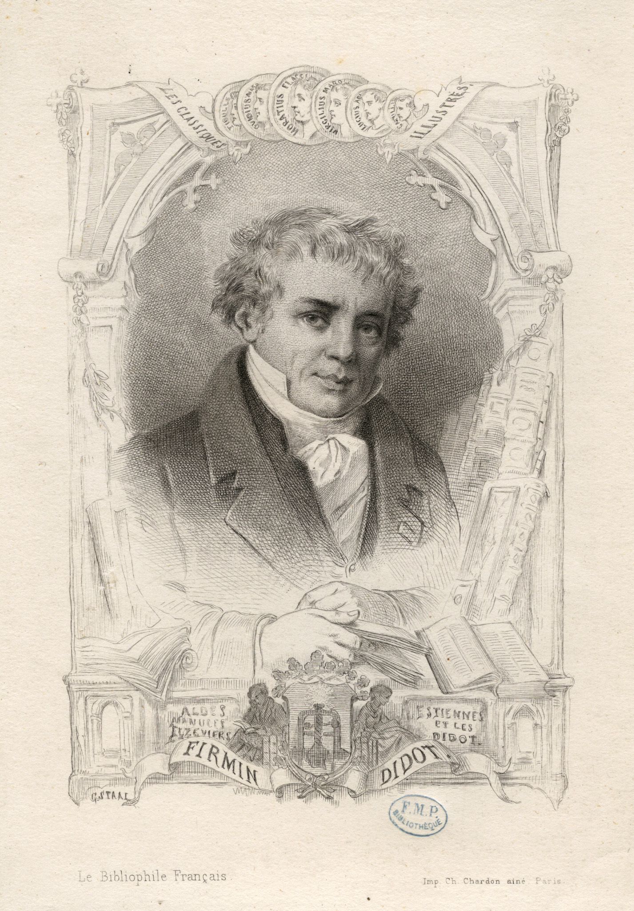

Firmin Didot...
(14 April 1764 – 24 April 1836) was a French printer, engraver, and type founder.Born in Paris into a family of printers founded by François Didot, the father of 11 children, Firmin was one of his grandchildren.Didot invented the word "stereotype", which in printing refers to the metal printing plate created for the actual printing of pages (as opposed to printing pages directly with movable type), and used the process extensively, revolutionizing the book trade by his cheap editions.